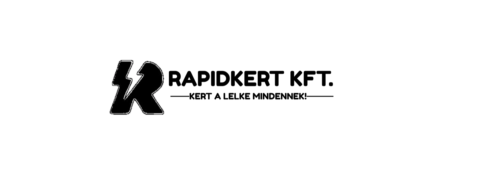
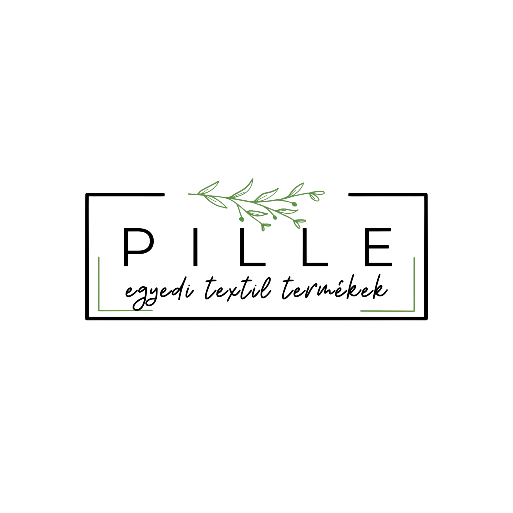

Stratos / Munkáink
Élő oldalak,
nem portfólió-képek.
Mindegyik oldal működik, mindegyiknek van dolga, és mindegyiket meg lehet nézni saját domainen. Ez a lista rövid — pontosan annyi projekt van rajta, amennyit be tudunk mutatni.
Számokat nem közlünk. Amíg egy ügyfél nem ad hozzá ellenőrizhető adatot, addig azt írjuk le, ami látható és igazolható.
Projektek
Három projekt, három szerkezet
 Rapidkert Kft. — kertépítés
Rapidkert Kft. — kertépítés
Egy kert, amit este is meg akarsz nézni
Automata öntözőrendszer és kertépítés. Az egész nyitóképernyő egyetlen esti kertfotó, a szolgáltatás a címsorban van kimondva, és a nyitóképernyő egyetlen gombja egy díjmentes konzultáció.
 Barbershop Győr — borbélyüzlet
Barbershop Győr — borbélyüzlet
Egy oldal, aminek egyetlen dolga az időpont
Az egész nyitóképernyő az időpontfoglalás köré épül: egy arany gomb, a menü alatta, és a valódi Google-értékelések ott, ahol a látogató amúgy is a bizonyítékot keresi.
 mentáliserő.hu — mentáltréning
mentáliserő.hu — mentáltréning
Egy szakember, egy ígéret, egy gomb
Sportolóknak szóló mentáltréning. Egyszemélyes szolgáltatás, ezért az oldal is egyes szám első személyben beszél, és a nyitóképernyő nem szolgáltatáslistát mutat, hanem egyetlen döntést kér.
További ügyfelek
Akikkel dolgoztunk, de nincs róluk esettanulmány
Nem minden projektről lehet oldalnyi anyagot írni. Ezek itt maradnak megnevezve, esettanulmány nélkül — így nem kell kitalálnunk hozzájuk semmit.



Ami mindegyikben közös
Nem a stílus közös bennük, hanem a munkamódszer.
A három oldal szándékosan nem hasonlít egymásra. Egy borbélyüzletnek időpontot kell foglaltatnia, egy kertépítőnek bizalmat kell építenie egy nagy értékű beruházás előtt, egy mentáltrénernek pedig személyes kapcsolatot kell teremtenie. Ugyanaz a sablon mindháromnak rossz lenne.
- Minden oldal egyedi tervezés — nem témasablon átszínezése.
- A nyitóképernyőnek egy dolga van, és az mérhető.
- A tartalom a vállalkozás nyelvén szól, nem marketinges nyelven.
- Reszponzív kialakítás, mobilon és asztali gépen egyaránt tesztelve.
Következő lépés
A tiéd lenne a negyedik.
Mondd el, mit csinál a vállalkozásod és mit vársz az oldaltól. A többi onnantól a mi dolgunk.